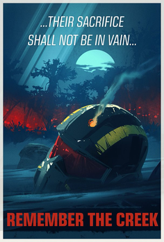

Тяжелый путь, простеленный перед управляемой демократией изнурителен и ранящий. Иногда нужно просто сесть и отдохнуть, вспомнив подвиги наших бравых десантников.
ОСВОБОЖДЕНИЕ МАЛЕВЕЛОН-КРИКА
Малевелон-Крик – одна из первых планет, ощутившая на себе ужасы войны во время вторжения автоматонов. Первый месяц войны был разрушителен: миллионы убитых солдат и мирных жителей, разрушенные дома, сожённые леса. Кровожадные автоматоны не знают жалости. Во время операции "Разборка" было освождено множество планет, включая известный Малевелон-Крик, ставший символом выносливой борьбы Адского Десанта против социалистических роботов.
В награду за этот героических подвиг, всем десантникам были вручены памятные плащи, символизирущие бесконечное уважение в павшим героям и стремление отомстить врагу за пролитую кровь.
Стоит сказать, что после того как первый авангард автоматонов и подошли их основные силы, основной удар пришёлся в направления именно Малевелон-Крика. Предположительно, целью ботов было осквернение мемориального памятника, чтобы снизить моральных дух Адского Десанта.
Но несмотря на численное превосходство противника, невозмутимые десантники и близко не подпустили врага к обители демократии.
УНИЧТОЖЕНИЕ МЕРИДИИ
Было предпринято множество попыток сдерживания территориальной экспансии терминидов. Один из самых масштабных заключался в создании некоего "барьера": 4 планеты протяжённостью в целый космический сектор, обладали комплексами специальных установок с системой распыления сдерживающего газа, который должен был сдерживать мутации и размножение терминидов. Однако, всё пошло не по плану, и данные газы лишь способствовали распространению жуков. В следствии этого, была небходима отдельная операция по освобождению этих 4 планет. Так и было сделано, но одна из них, Меридия, была окончательно порабощена гнусными жуками. Настолько сильно, что первое время было невозможным ведении каких-либо военных действий на её территории.
В дальнейшем, высшее командование Супер Земли приняло решение об уничтожении так называемой "суперколонии". Меридия была окружена космическим флотом и была подвержена множественным храбым высадкам, по внедрении в неё специальной материи. Идея заключалась в том, чтобы использовать добытые в Первой Галактической Войне технологии просветлённых и уничтожить Меридию, превратив её в чёрную дыру.
Так и было сделано. Суперколония жуков на планете Меридия была уничтожена, на её место встала большая чёрная дыра. Беспокоится не о чем, она полностью контролируема. Уничтожение целой планеты, это во всяком случае трагедия, но после того как жуки полностью захватили на ней контроль и не осталось ни одного живого человека, действовать нужно было быстро.
Таким образом, уничтожение Меридии стало символом безграничной силы духа и воли, качеств, необходимые для принятия столь серьёзных решений. Адский Десант вновь доказал, что готов на всё ради демократии.
СПАСЕНИЕ ДЕТЕЙ НА КОЛОДЦАХ ВЕРНЕНА
В разгар очередной межзвёздной операции по борьбе с автоматонами перед адскими десантниками встал сложный выбор.
Под угрозой уничтожения на планете Марфарк находился огромный завод по разработке противотанковых мин, в которых так сильно, на тот момент, нуждался Адский Десант. В то же время, был получен сигнал бедствия: на практически соседней планете, Колодцы Вернена, в смертельной опасности находились очень больные дети, запертые в больнице.

Ресурсов и времени хватало лишь на освобождение одной планеты. Либо получение в обиход нового оружия, либо спасение детей, запертые в ловушку. Не долго думая, Адский Десант принял волевое решение о спасении тысячи больных детей. Колодцы Вернена в считанные дни были освобождены, а дети отправлены домой к своим семьям. Мы пошли на уступки на фронте, чтобы помочь мирным детям.
Организацией "Arrowhead" был осуществлён значительный финансовый взнос в фонд помощи больным детям.